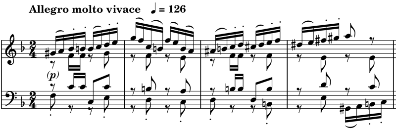
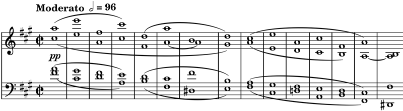

シューマン: 弦楽四重奏曲第1～3番
シューマンの弦楽四重奏曲といえば、実演に接する機会もなく、もっぱらジュリアード四重奏団のLPを長く聴いてきた。CBSソニーのLP（もう手元にないけれども、確か不思議と埃が付きにくかったと記憶している）は、固くて弦の音も不自然だったが、楷書的な演奏は十分満足できるものだった。後にCD化されたこのアルバム自体は配信にも上がっているのだが、弦楽四重奏曲3曲がすっぽり除外されていて聴くことができない。残念である。代わりに同時期のライブの音源が見つかった。さすがに微動だにしない解釈で演奏されているものの、音はさらに悪い。そんなこともあって新しめのものに目を向けて探していて下の録音に行き当たった。本ブログの最初期でも取り上げたグリンゴルツ四重奏団の演奏で、これはそのデビューアルバムとのこと。
Robert Shumann: String Quartets
Op. 41 Nos. 1 - 3
Gringolts Quartet
(2010)
クリアな音で洗い直したような、とても自由な演奏で、あちこちのフレーズに柔らかいバネが入っているかのように感じる。たいていの演奏だと既に頭の中にある「理想像」をなぞって聴くだけになってしまうようなこの曲を、ほとんど新しく接するかのように聴かせるのはこの演奏くらいであった。また、シューマンのこの三姉妹カルテット、特に『第1番』『第2番』には、ごく一部、意図的だろうけれどもぎこちない（あるいは非常にシューマンらしい）部分があると思っているのだが、それも自然な流れの中で気にならなくなっている。例えば、『第2番』終楽章の下の箇所とそれに続くあたりなど。

ピアノで弾くとどうということのないシューマン節だが、弦楽では何故か取って付けたように聴こえる。さらに、ジュリアードの楽譜に忠実なインテンポの演奏だと、やや何を言いたいのかわからなくなってしまう感がある。それに対して、グリンゴルツの場合は極端とも思える緩急法と表情付けによってつい「フモール」などと言いたくなる諧謔の調子でこの楽章を処理していて、その中に上のような箇所を浮き上がることなく存在させておりなるほどと思わせる。
シューマン自身は "Musikalische Haus- und Lebensregeln" （『ユーゲントアルバム』の付録）の中で拍子を守ることを特に戒めていたりして、意外と保守的な解釈しか許さなかったのかもしれないが、これは若年者へのアドヴァイスなので一般に当てはめる必要もないだろう。だが、そんな事を考えているとシューマン演奏の伝統ということについて少し気になってしまい、『第1番』だけだが1920年代のカペー四重奏団の録音も聴いてみた（驚くようなスタイルの違いがあるのではないかと期待しつつ）。もう百年近く前の貴重な記録である。電気録音なのでそれほど聴きづらくはない。カペーはノンヴィブラートが特徴と聞いていたが、この演奏はヴィブラートを多用している（第3楽章に顕著）。だが勿論かけっぱなしというわけではないし、幅が非常に狭いためか、かけ方ゆえか、常に芯の音程が明瞭である。ただ、そもそもこれは白か黒かといった単純な問題ではないことは確かである。一方曲の形態自体はオーソドックスで、語弊があるかもしれないが、ポルタメントの多用を除いてみれば、スタイル的にジュリアードと共通する部分が多いようにも思った。
Robert Shumann: String Quartet No. 1
in A Minor, Op. 41 No. 1
Quatuor Capet
(1928)
最も印象深かったのは、第4楽章の終わりに一旦テンポが落ちてミュゼット風のフレーズになり、続いて下記の和音進行になる箇所。転調を伴う単純な和声進行が下りながら2回繰り返されるだけのことだが、非常に遅いテンポで瞑想のように奏される。あまりこういう言い方は好きではないけれども、ここだけでも一聴の価値があると思ってしまった。

(Mar. 30, 2024)